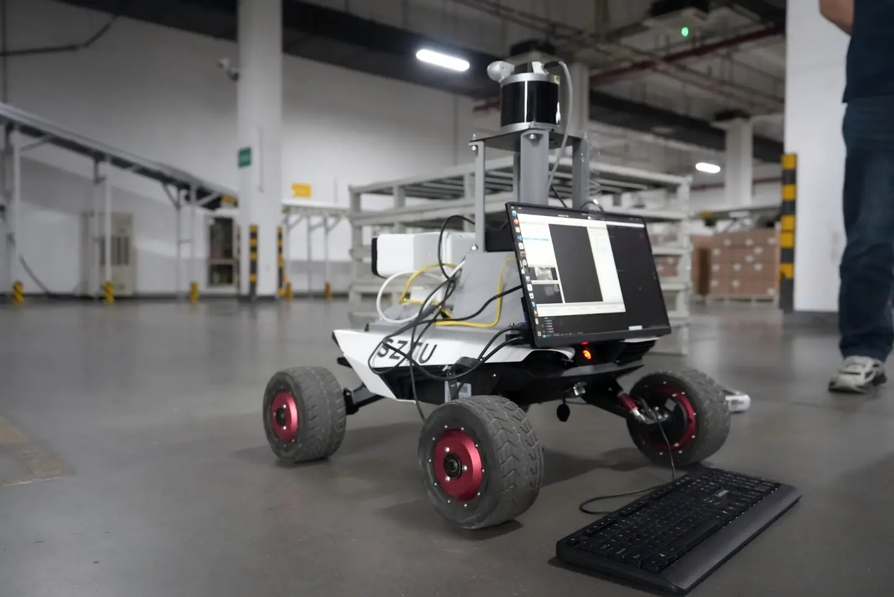
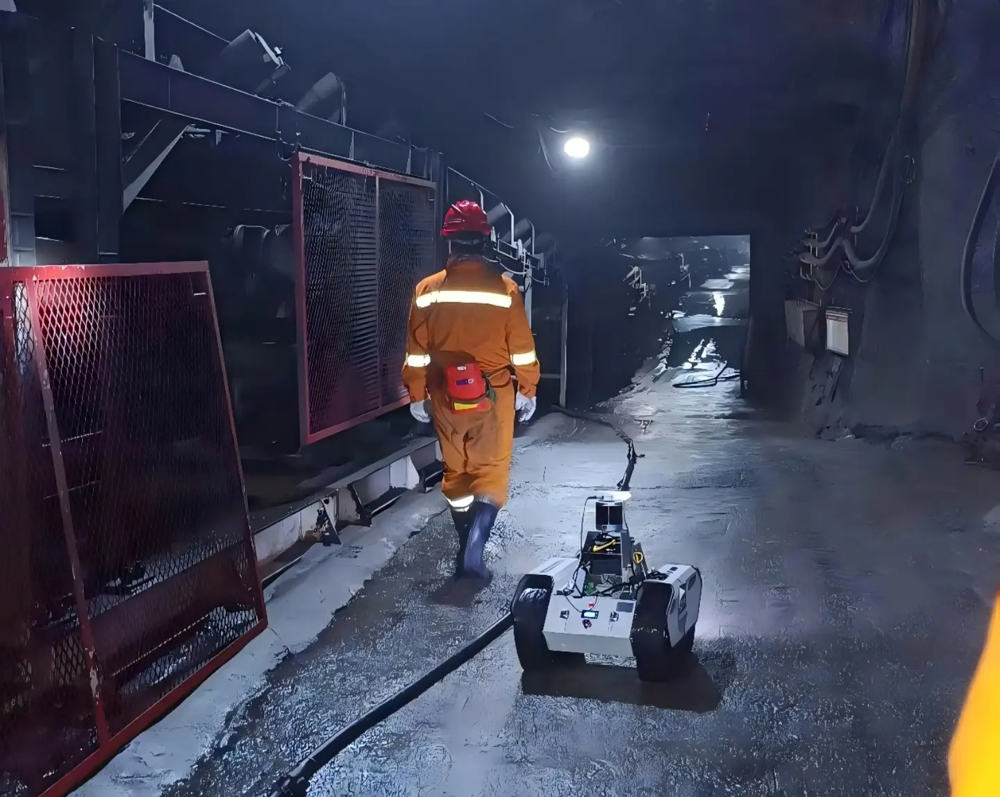

行业应用与业务系统
承载业务目标、作业流程和具体任务需求。
OriginMind AI OS™ 是一种位于上层应用与机器人硬件之间的机器人智能操作系统。它统一管理感知、任务规划、技能执行、运行状态、记忆与机器人接口，使核心能力可以在轮式、履带、四足、人形及移动操作平台之间复用。
承载业务目标、作业流程和具体任务需求。
统一管理环境理解、任务规划、技能执行、运行状态、记忆和机器人接口。
轮式、履带、四足、人形及移动操作平台。
以统一软件基础贯穿原型开发、机型适配和现场部署，减少重复开发。
将感知、环境状态、规划、技能、运行状态和机器人接口纳入同一运行时，减少模块拼接与状态对账。
围绕任务目标、作业流程和可复用技能组织功能，避免为每个动作重复编写固定脚本。
保持智能层稳定，通过本体适配层连接不同机器人平台。
统一查看任务记录、运行状态和执行结果，便于定位问题、调整参数并验证新版本。
四段实机演示，展示自主建图与导航、任务理解以及移动操作协同。
机器人自主完成环境建图、定位、避障与路径规划，适应室内通道和非结构化室外环境。
系统将自然语言指令转化为可执行任务，通过统一运行时协调移动、操作与多步骤技能。
两个真实项目，展示大型医药仓库和复杂地下矿井中的自主巡检验证。

在现场验证中，轮式机器人完成了环境建图、多区域导航、巡检点管理和任务记录。

在真实地下巷道中，机器人开展了低照度、积水、粉尘和无 GNSS 条件下的感知、定位与移动测试。
源灵™（OriginMind™）源自深圳技术大学机器人自主移动与操作实验室（ARTS Robotics）在自主移动与操作、具身智能、SLAM 与导航及机器人控制方面的长期研究。
深圳源灵智能科技有限公司负责将这些能力产品化为 OriginMind AI OS™，并承担产品研发、工程交付与商业合作。系统持续在医药仓储、地下矿井等真实环境中开展验证。